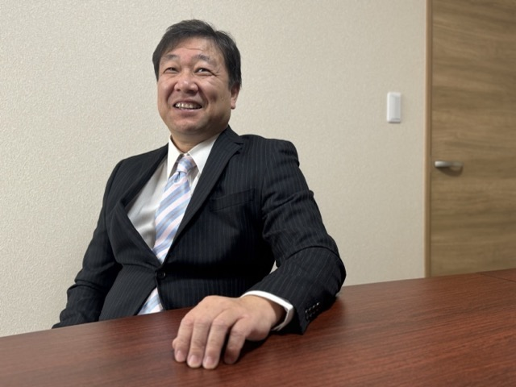
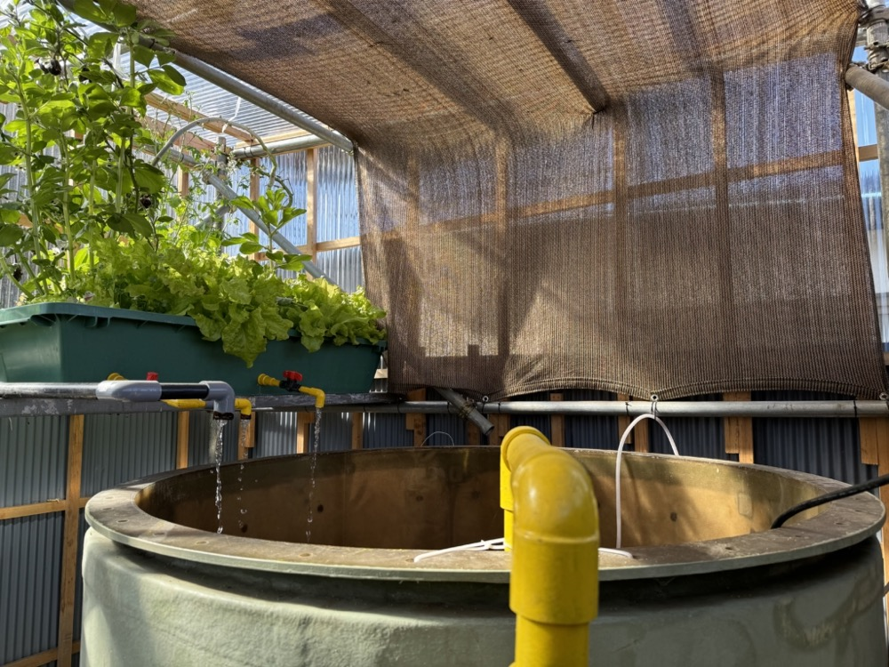
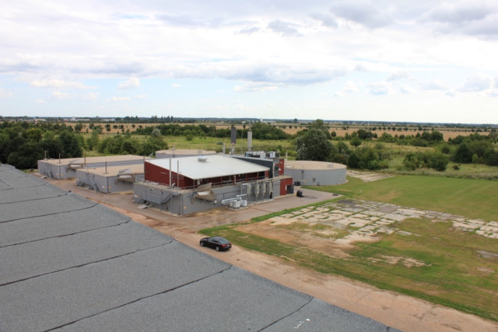
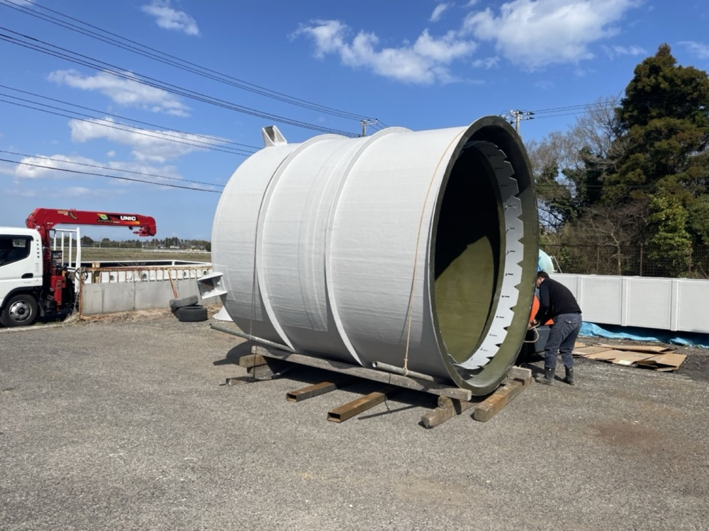
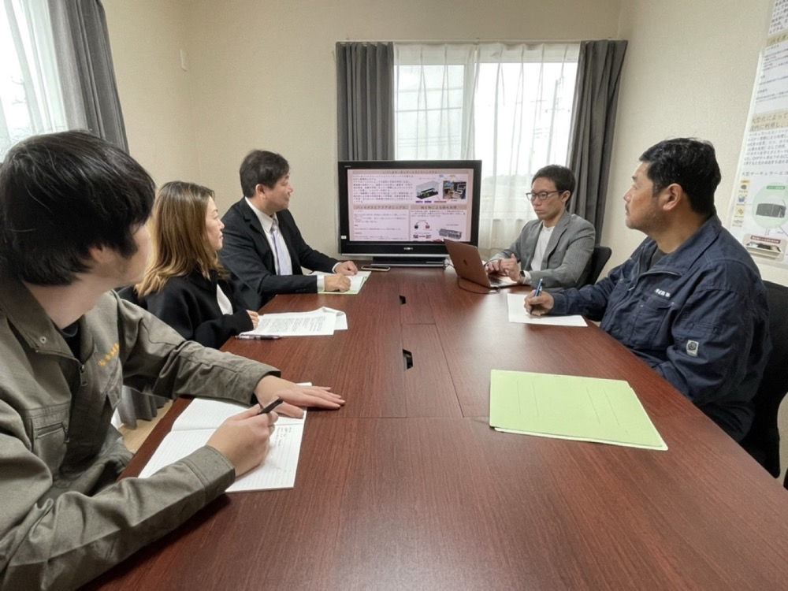

長生郡から世界へ。バイオガスのトップランナーとは
大吉 誠司Seiji Oyoshi
有限会社幸和商事 代表取締役
1991年、有限会社幸和商事に入社。2020年、同社執行役員就任、長野市バイオマスタウン構想協議会会員就任。 2021年、信州大学『信州そるがむで地域を元気にする会』理事就任。2023年、同社代表取締役専務就任。
企業サイトを見るTRACK 01
長生郡から世界へ。バイオガスのトップランナーとは

有限会社幸和商事は千葉県長生郡白子町にある会社だ。バイオガス発電装置の企画開発・サーキュラーエコノミーシステム（バイオガス装置+陸上養殖+植物栽培）の企画開発から、再生エネルギー関連施設の運営に関するコンサルタント業務、また自社工場にてFRP（繊維強化プラスチック）製タンクの製造や各製造工場などでのメンテナンス工事を行なっている。
会社本体は10名と少人数ではあるものの、協力会社の力を借りながら小回りをきかせ、ときには大型の案件にも対応している。FRP製品製造には30年以上も携わっており、製造した製品は世界各国で使用されている。
「自社工場でプラスチックと鉄やステンレス素材の製品を一気通貫で製造出来るのが弊社の強みです。バイオガス・サーキュラーエコノミー分野でも自社設計から製造、設置工事、運営、コンサルタント業務まで全て行うことが可能なんです。」そう語るのは、代表取締役専務の大吉充氏だ。
TRACK 02
たどり着いた先は『環境・エネルギー・食』


プラスチック材料商社に勤めていた大吉専務の父が、当時急速に普及していたFRP（繊維強化プラスチック）に興味を持ち、材料商社として独立したのが幸和商事の始まりだ。FRPは薬品に非常に強く、さらに錆びない・軽い素材として知られており、工業分野で今でも必要不可欠なマテリアルとして重宝されている。その後、本来ものづくりの好きな父が自分で製造を開始したのをきっかけに手伝うような形で大吉専務は幸和商事に入社した。
しかし当時はバブルが崩壊した真っ只中で経営もとても苦しい状態が続いていた。そこで新たな分野への挑戦を決意し、何が将来的に伸びる分野なのか、人に喜ばれる仕事とは何なのか、と様々な分野を調べたという。
「ようやくたどり着いたのは、『環境・エネルギー・食』という3文字でした。私の子供の頃はしょっちゅう夏になると光化学スモッグ警報が発令されていた時代で、空がいつもよどんでいたのを覚えています。これを思い出すたびに高村光太郎の『智恵子抄のあどけない話』を思い出したものでした。美しい空を取り戻すには環境に優しいクリーンなエネルギーでなければいけない、そう考えたときにバイオマスというキーワードにたどり着きました。」と当時を思い返しながら語る大吉専務。
